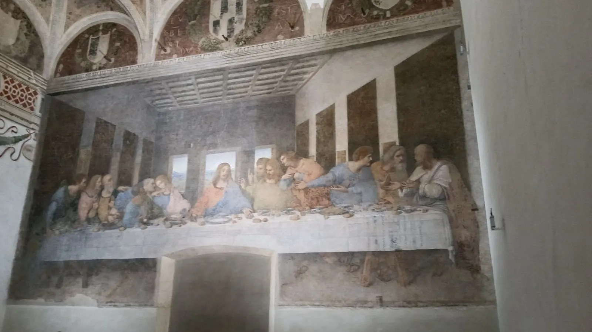
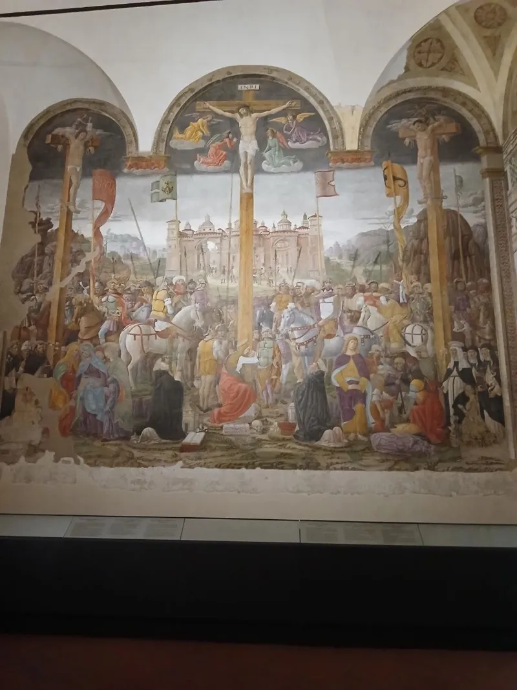

In breve
Il Cenacolo di Leonardo è sulla parete dell'antico refettorio di Santa Maria delle Grazie a Milano e si vede solo con un turno prenotato: gruppi di massimo 40 persone, per 15 minuti, dal martedì alla domenica. I biglietti escono a blocchi circa tre mesi prima e le date migliori finiscono in poche ore. Se sai quando andrai a Milano, prenotare il Cenacolo deve essere una delle prime cose da fare.
Quando escono i biglietti
Le prenotazioni aprono ogni tre mesi, sempre a mezzogiorno sulla piattaforma ufficiale:
| La vendita apre a | Per le visite di |
|---|---|
| settembre | novembre – gennaio |
| dicembre | febbraio – aprile |
| marzo | maggio – luglio |
| giugno | agosto – ottobre |
Ci sono altre due occasioni: i biglietti aggiuntivi escono online ogni mercoledì a mezzogiorno per la settimana dopo, e i biglietti gratuiti della prima domenica del mese escono online il mercoledì prima, a mezzogiorno, e finiscono in pochi minuti.
Come prenotare
- Online sulla piattaforma ufficiale Vivaticket, collegata a cenacolovinciano.org: fino a 5 biglietti, e al massimo 5 biglietti a persona per anno solare.
- Call center +39 02 92800360: fino a 9 biglietti.
- Prezzi: 15 € intero (dai 25 anni), 2 € dai 18 ai 25 anni, gratis sotto i 18, ma serve sempre la prenotazione, anche per i bambini.
- I biglietti sono nominativi: scrivi i nomi esattamente come sul documento, perché dopo non si possono cambiare.
Tutto esaurito? Le alternative
- Riprova ogni mercoledì a mezzogiorno, quando escono i biglietti aggiuntivi della settimana dopo.
- Telefona al call center +39 02 92800360. Il nostro consiglio, per esperienza: quando sul sito non trovi niente, telefonare spesso funziona, e quando abbiamo prenotato noi uscivano posti nuovi il venerdì a mezzogiorno. Il sito ufficiale indica il mercoledì per i biglietti aggiuntivi online: prova tutti e due i giorni.
- Cerca le disdette: ricontrolla il calendario ufficiale nei giorni prima della visita, soprattutto la mattina presto.
- Visite guidate: le agenzie hanno posti loro, quindi spesso ne hanno quando il sito ufficiale è pieno. Costano molto di più, ma c'è una guida che ti spiega il dipinto.
- Sii flessibile: le mattine dei giorni feriali e gli ultimi turni della giornata sono i più facili da trovare.
Il giorno della visita
- Presentati alla biglietteria accanto all'ingresso almeno 30 minuti prima del tuo turno, con la ricevuta del pagamento: se arrivi tardi perdi il biglietto.
- Orari: dal martedì alla domenica, 8:15–19:00 (ultimo ingresso 18:45). Chiuso il lunedì, il 1° gennaio e il 25 dicembre.
- Si entra passando per alcune stanze di vetro che filtrano l'aria, poi sei nel refettorio.
- Le foto sono permesse, senza flash. Ma hai solo 15 minuti: fai un paio di foto, poi metti via il telefono e guarda.
Cosa vedrai in 15 minuti
L'Ultima Cena (1494–1498) occupa la parete di fondo: Gesù ha appena detto che uno degli apostoli lo tradirà, e i dodici reagiscono a gruppi di tre. Leonardo non dipinse a vero affresco ma a tempera sul muro asciutto: per questo il colore cominciò a staccarsi già quando era vivo, e per questo oggi è così delicato. Mettiti verso il centro della sala: il soffitto e le finestre dipinte continuano la stanza vera, come se la tavola facesse parte del refettorio.
Poi girati. Quasi tutti dimenticano che sulla parete opposta c'è un altro grande dipinto: la Crocifissione di Giovanni Donato da Montorfano, finita nel 1495 mentre Leonardo lavorava di fronte. Ai lati, oggi appena visibili, ci sono Ludovico il Moro, duca di Milano, e la moglie Beatrice d'Este, aggiunti probabilmente da Leonardo stesso.

Intorno a Santa Maria delle Grazie
Arriva prima e visita la chiesa di Santa Maria delle Grazie (gratis), con la tribuna rinascimentale di Bramante. Corso Magenta, la via davanti, ha caffè e pasticcerie eleganti per un caffè prima del turno. Da qui il Duomo è a circa 20 minuti a piedi o a poche fermate della metro M1 da Conciliazione o Cadorna. Per il resto della città c'è il nostro itinerario Milano in 2 giorni.
Organizza la visita a Milano
Alcuni link sono affiliati: se prenoti tramite loro non paghi nulla in più e aiuti 687 a restare gratuito.
Milano, prenotata e pronta.
In 687 Italy il Cenacolo è segnato Book ahead, così lo vedi mentre organizzi. L'app costruisce i tuoi giorni a Milano a tappe, con treni, meteo e avvisi di sciopero.
Fonti
- Museo del Cenacolo Vinciano – Informazioni, prezzi e orari (ufficiale)
- Museo del Cenacolo Vinciano – Prenota il biglietto (ufficiale)
- Ministero della Cultura – Cenacolo Vinciano
Verificate su questi siti ufficiali a novembre 2026. Prezzi e regole possono cambiare: controlla sempre prima di partire.